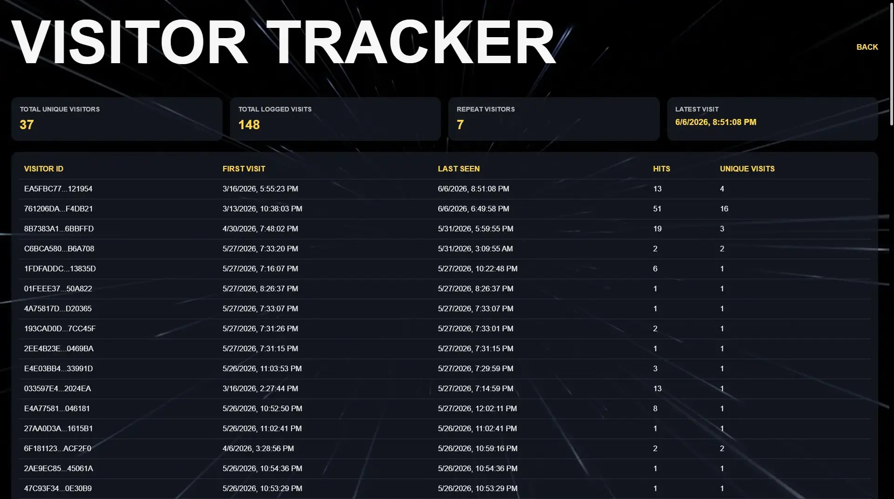

About me: Hi, My name is Paolo Dominic Zafra, but I prefer to be called Zaf. I am a computer engineering graduate with a strong focus on the software side of engineering, especially in building and deploying systems in the cloud. I have worked on projects using AWS Terraform, and CD/CD pipelines, inclu- ding a cloud-based portfolio with a serverless backend and a Wi-Fi voucher system that integrates both hardware and software. I enjoy going beyond basic requirements and turning simple ideas into complete, working systems. This approach helps me deepen my under- standing and build solutions that are closer to real-world applications. Currently, I am focused on growing my skills in cloud and backend develo- pment while working toward opportun- ities where I can contribute to scal- able and production-ready systems.


Sumo Bot MKI is a fully built autonomous robot designed
to push opponents out of the ring.
It achieved 1st Runner-Up, narrowly losing to the champion
due to a mechanical failure in the rear wheels.
Sumo Bot MKII is a modified
version redesigned into a
line-following Sumo bot
for another project.
It demonstrates adaptability
in both hardware reuse
and system redesign.


An extruder capable of reaching temperatures up to 400°C,
designed to convert plastic straws into usable filament
for 3D printing.
The system includes a shredder for breaking down plastic,
cooling fans, a diameter sensor, a camera for monitoring,
and a filament winder.
All components can be controlled through a custom web
interface accessible via its own IP address, similar
to a Wi-Fi router.
Click :My Portfolio:
in home to see Resume


This is an enhanced version of the visitor counter that was
once integrated into this portfolio website. It can be accessed
by clicking the lambda icon on the home page.
The system tracks hashed visitor IDs, first and
latest visit timestamps, total hits, and unique visits.
Hits count every visit regardless of frequency, while unique
visits are limited to one count per visitor every 24 hours.
The admin dashboard is active and running but
it is reserved for authorized reviewers only.

This project is a cloud-hosted portfolio built to showcase
my work while applying real-world cloud engineering practices.
The frontend is deployed using cloud storage and delivered
through a CDN, while a serverless backend powers features
such as a visitor counter using API Gateway, Lambda,
and DynamoDB.
The infrastructure is managed using Terraform, and deployments
are automated through CI/CD pipelines.
Instead of creating a simple static portfolio, I designed this
project as a complete system that reflects how modern
applications are built, deployed, and maintained in the cloud.
A Wi-Fi voucher dispensing system that provides internet
access codes through a simple tap interface.
It includes a built-in database that stores voucher codes,
student information such as program and ID, and tracks
voucher usage per student.
The system integrates both hardware and software, making
it suitable for controlled network access environments
like schools.
Developed using RenPy, a visual novel engine powered
by Python scripting.
Originally tasked to create a simple multiplayer TicTacToe
game, I expanded the project to explore how game logic
integrates with storytelling systems.
As someone interested in RenPy games, building this project
gave me a deeper understanding of the complexity behind
visual novel development and why production cycles can
take months.